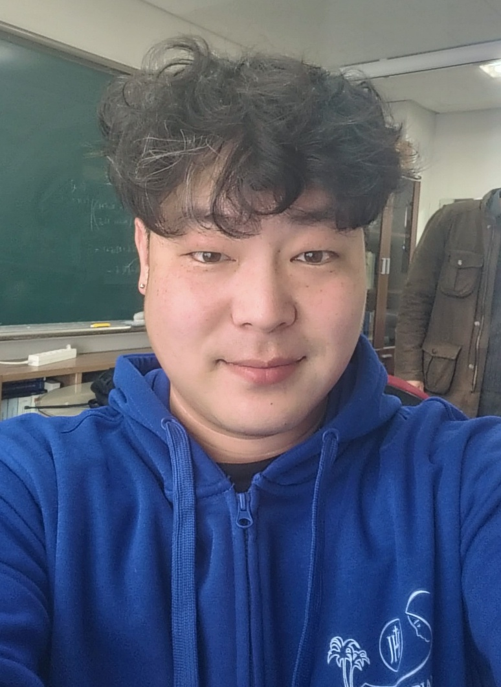
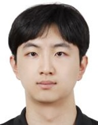
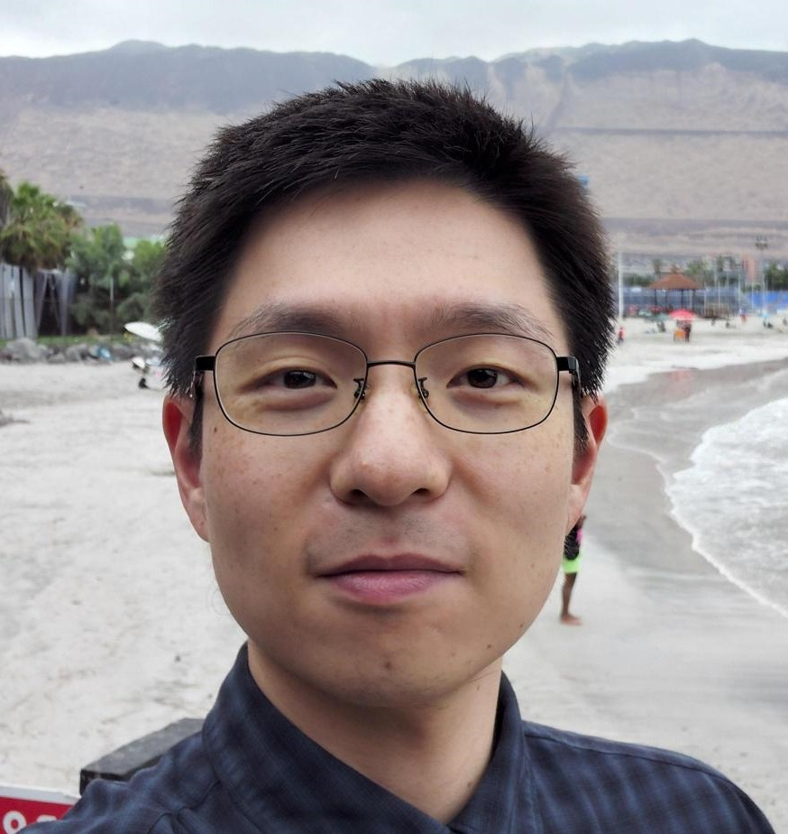
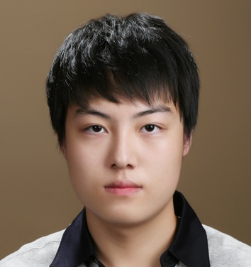
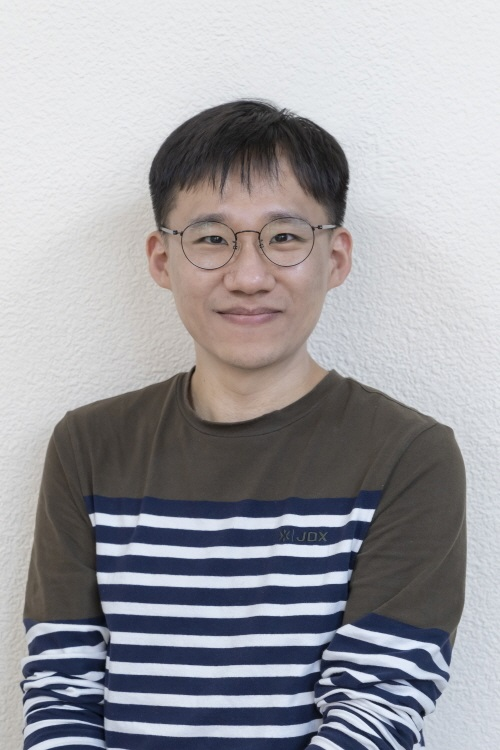
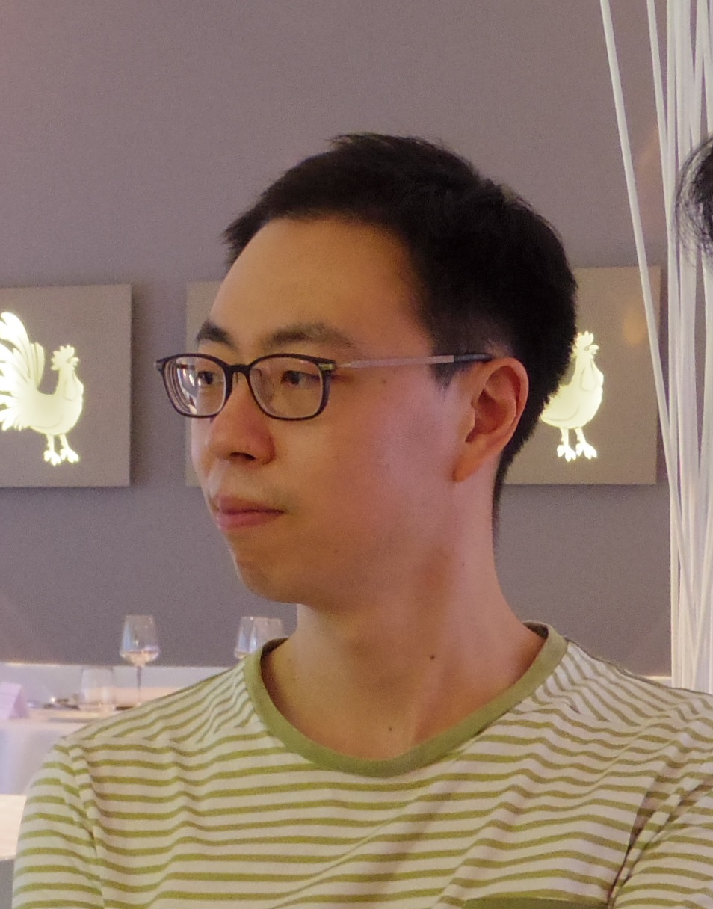
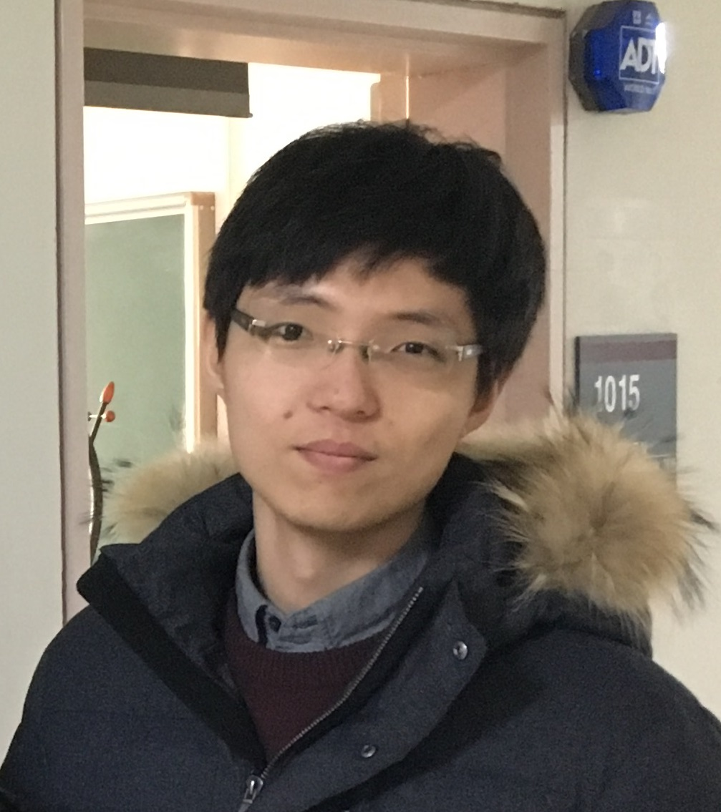
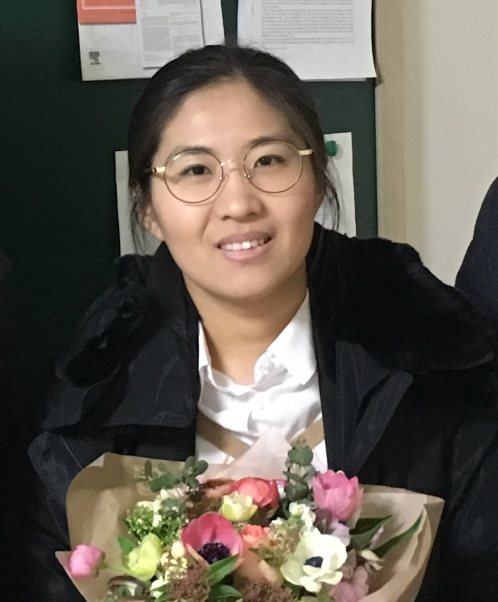
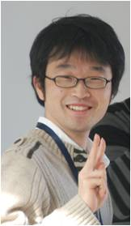

Kawon Lee 이가원
String Theory and Statistical Physics
Lab7616 · Members

String Theory and Statistical Physics



Dissertation: Exploring Modified Gravity: From Gauss-Bonnet to String Theory (2024)

Dissertation: Einstein Double Field Equations and Applications (2021)

Dissertation: Analyticity and Critical Phenomena in Statistical Physics (2017)



Dissertation: Double Field Theory and Stringy Differential Geometry (2012)